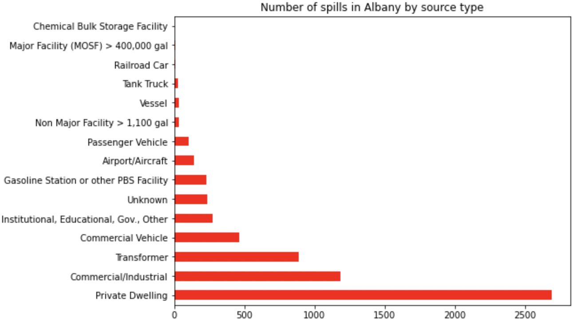
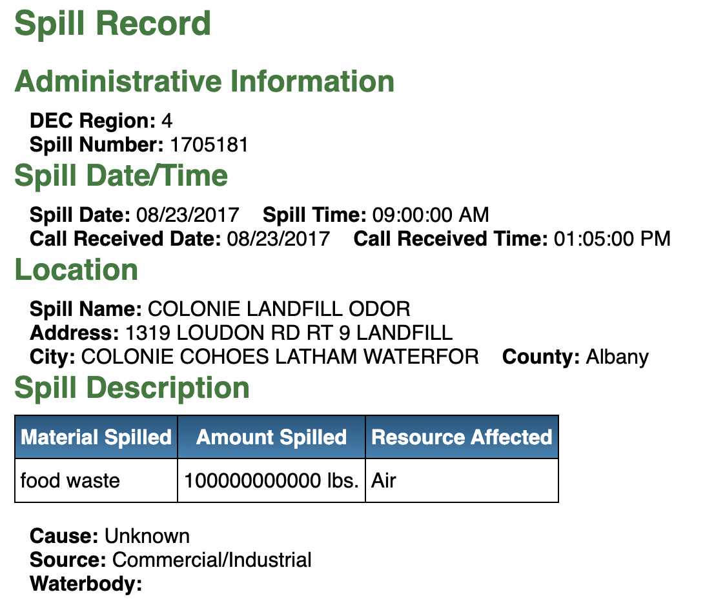

In the last five years, New York recorded over 61,000 hazardous material spills across the state. Of the 72 counties from the state included in the dataset, Westchester had the most number of spill incidents recorded. But, when it comes to counties with the biggest spills by quantity of material spilled, Albany leads the way!

Fuel and transformer oil were the most common materials spilled. The biggest spill in the last five years happened in August 2017 when over a hundred billion pounds of food waste spilled, affecting the air. It happened in a landfill in Colonie in Albany. The database doesn't give out its cause or any other additional details.

Three more incidents were found the same facility each with major spillage quantities. All these spills, when cross-referenced with the detailed spill incidents search database reportedly affected the air with odor. No further details were reported on the database. The town of Colonie's population is over 83,000, according to its website. It's about 160 miles north of New York City.
For New Yorkers, closer to home, the biggest spill happened in November last year in Jamaica, Queens. Over three million gallons of jet fuel spilled affecting the soil in the area.
We also looked at the number of days it takes to close incident complaints. Some of the longest ones were well over a thousand days, but there's no reason listed for the delay. The quantity of spillage doesn't seem to matter, with the longest incident record being one about a gallon worth of petroleum spillage in Cayuga county.